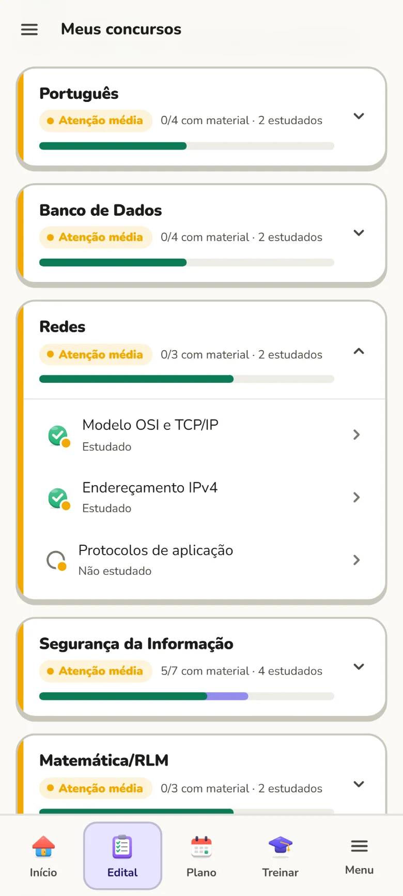
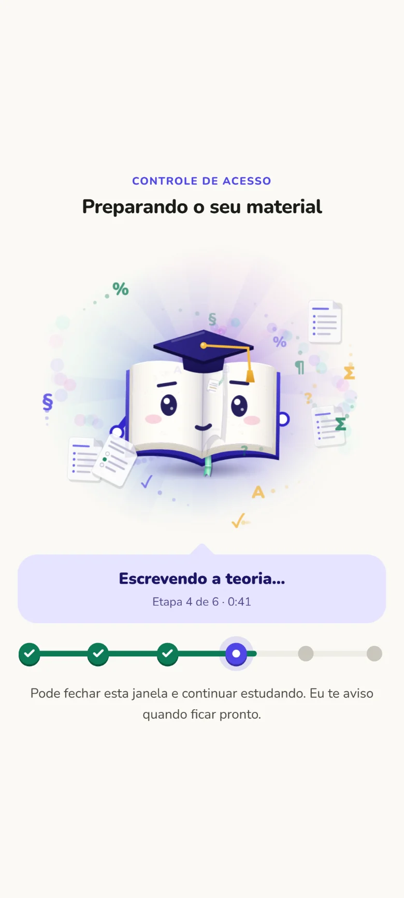
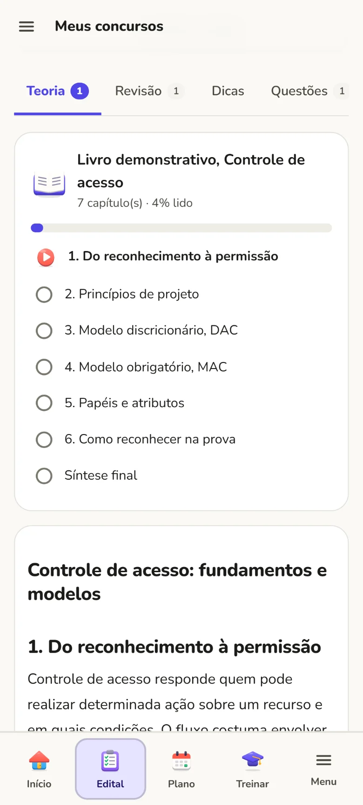
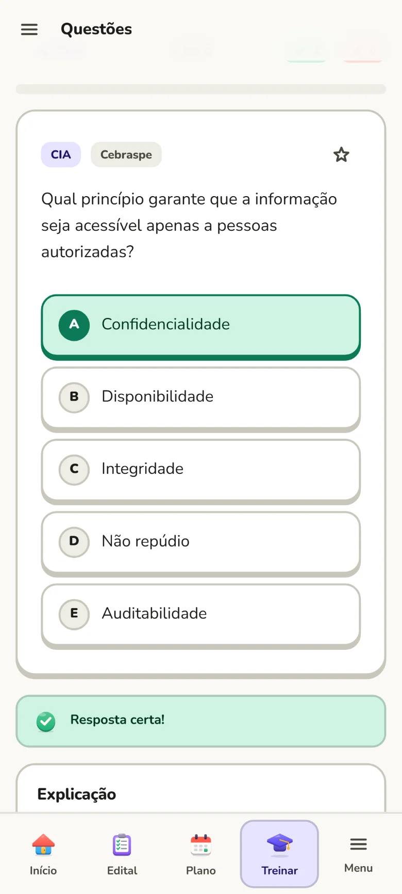
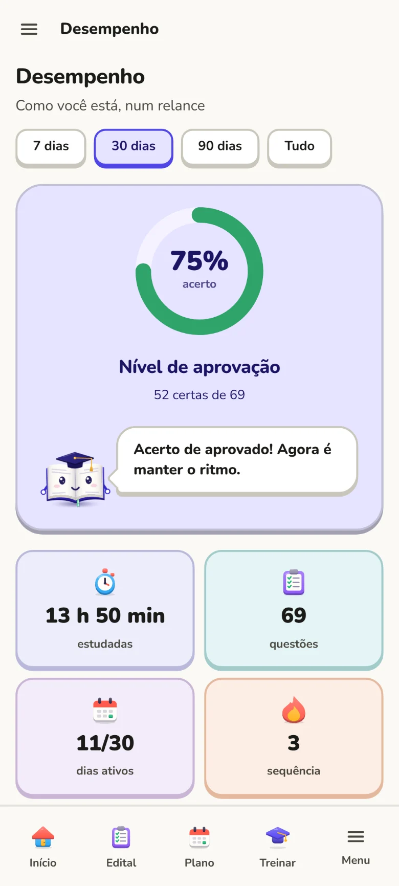

Como funciona
Quatro passos e você sabe exatamente o que estudar hoje
Mande o edital
Envie o PDF ou escolha seu concurso no catálogo. Matérias e tópicos saem organizados.
Monte seu plano
Diga quanto tempo tem por dia e quando é a prova. O plano distribui as matérias pelo peso.
Estude cada tópico
Teoria em capítulos, resumo, flashcards, dicas e pegadinhas, com as fontes citadas.
Treine e revise
Questões comentadas e revisões espaçadas para o que você estudou não sumir.
Recursos
O que tem dentro
Abra o app e saiba o que fazer agora
- A missão do dia já vem escolhida, na ordem do seu plano.
- Veja quanto do edital você já cobriu, matéria por matéria.
- Sequência de dias, XP e nível para manter o ritmo.
Seu edital inteiro, com o que pede mais atenção em destaque
- Matérias e tópicos na ordem do edital oficial.
- Cores mostram o peso na prova somado à sua dificuldade.
- Um clique gera o material de qualquer tópico.

Material completo para cada tópico, pronto em minutos
- Teoria em capítulos, com grifos e anotações suas.
- Resumo, flashcards, dicas e pegadinhas da banca.
- Fontes oficiais citadas para você conferir lei e conteúdo.


Questões no estilo da sua banca, com explicação
- Cada alternativa explicada, inclusive as erradas.
- O caderno de erros mostra o conceito que você mais erra.
- Simulados com cronômetro e nota por matéria.

Um plano que cabe na sua rotina, e se ajusta quando a vida acontece
- Montado a partir do edital, do seu tempo livre e da data da prova.
- Teoria com questões logo depois e rodízio das matérias por peso.
- Atrasou? Ele replaneja sem apagar o que você já fez.
Veja em um olhar se você está pronto para a prova
- Acerto com a tendência das últimas semanas.
- As matérias da mais forte para a mais fraca, em cores.
- Seus pontos fortes e o que reforçar, tópico por tópico.

Por dentro
Deslize e veja o app inteiro
Experimente agora, sem cadastro
Abra o Estudário com um concurso de exemplo e mexa em tudo: plano, edital, questões e desempenho.
Conheça o Folha
Esse é o Folha
O Folha é o livrinho de capelo do Estudário. Ele comemora cada acerto, te anima nos erros, avisa quando o tempo planejado acabou e mostra o que vem agora. Estudar em casa deixa de ser estudar sozinho.
Constância
Para não largar no meio
Concurso se ganha no dia a dia. O app mostra o que você já fez e o que falta, todo dia.
Sequência de dias
Feche a meta do dia e veja a sequência crescer. Uma tarefa do plano ou uma revisão já contam.
XP e níveis
Cada estudo vale XP. Os títulos vão de Iniciante a Lenda do edital.
Emblemas
Conquistas em bronze, prata, ouro, ametista e esmeralda para cada marco.
Modo foco
Cronômetro para estudar sem distração, que avisa quando o tempo planejado acabou.
Revisão espaçada
O que você estudou volta no momento certo para não ser esquecido.
Celular e computador
Entre com a mesma conta nos dois e o estudo aparece nos dois. Sem conta, fica só no celular.
Planos
Comece grátis
Planejamento, leitura, treino e revisões são grátis. Os recursos com IA têm um limite de uso por mês.
Grátis
Para conhecer e estudar no dia a dia.
- Edital, plano, leitura, questões e revisões
- Sequência, XP, níveis e emblemas
- 1 edital lido pela IA
- 10 materiais completos por mês
Planos pagos
Para quem quer gerar mais material e ir mais longe.
- Essencial: 3 editais e 60 materiais por mês
- Pro: 8 editais e 200 materiais por mês
- Mais questões geradas por lote
Dúvidas
Perguntas frequentes
Funciona para qualquer concurso?
Sim. Você manda o edital do seu concurso ou escolhe um do catálogo, e o Estudário organiza as matérias e tópicos dele. O material e as questões seguem o que o edital pede.
Precisa de internet?
Para estudar, não: leitura, plano, questões salvas e revisões funcionam offline. A internet entra para gerar material novo e para o celular e o computador se falarem.
De onde vem o material?
Cada material é escrito a partir de fontes oficiais, como a legislação e os órgãos públicos, e passa por uma segunda revisão antes da entrega. As fontes consultadas ficam listadas no próprio material.
Onde ficam meus dados?
No seu celular. Se você entrar com a conta Google, uma cópia fica na sua conta no servidor do Estudário, para o app do computador mostrar a mesma coisa; só você acessa essa cópia. O backup no Google Drive continua opcional. Veja os detalhes na política de privacidade.
Tem versão para iPhone ou computador?
Tem! No computador (e no navegador do iPhone), entre em app.estudario.com.br com a sua conta Google: plano, edital, questões e material ficam lá, e tudo sincroniza com o app do Android em segundos.
Comece hoje
Baixe grátis, mande o edital e o plano de amanhã já fica pronto.